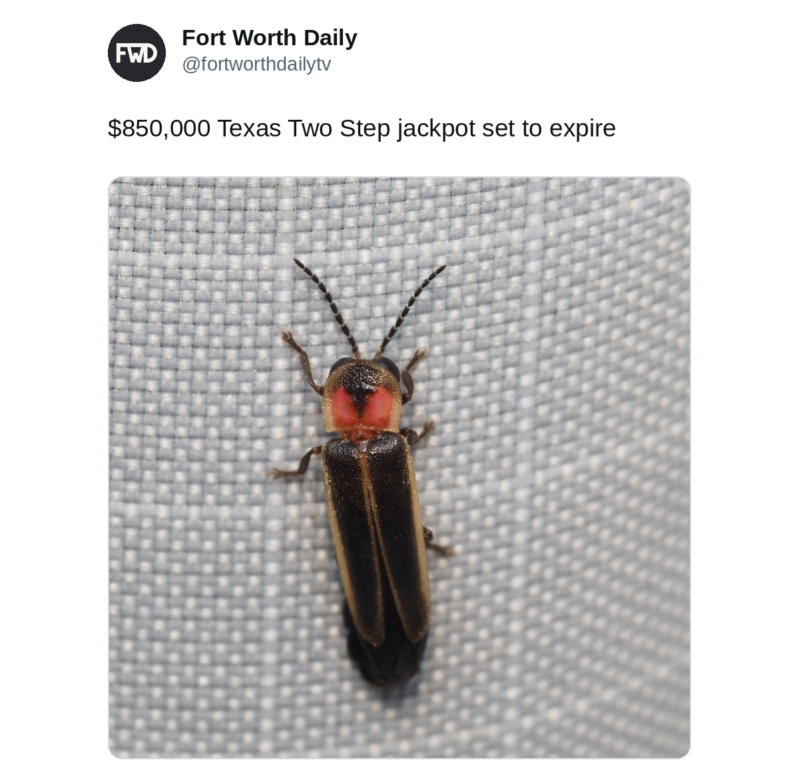

FWD
Fort Worth Daily
Just now · 🌎 · other · template writer
Just now · 🌎 · other · template writer
A Texas Two Step ticket worth $850,000 remains unclaimed after being sold in San Antonio.

FWD
story + scoring
{
"source": "KXAN Austin",
"kind": "rss",
"score": 0.387,
"relevance": 2,
"url": "https://www.kxan.com/news/texas/850000-texas-two-step-jackpot-set-to-expire/",
"image_license": "wikimedia-cc",
"image_credit": "Photo: (c) Russell Pfau, some rights reserved (CC BY) via Wikimedia Commons (CC BY 4.0)"
}